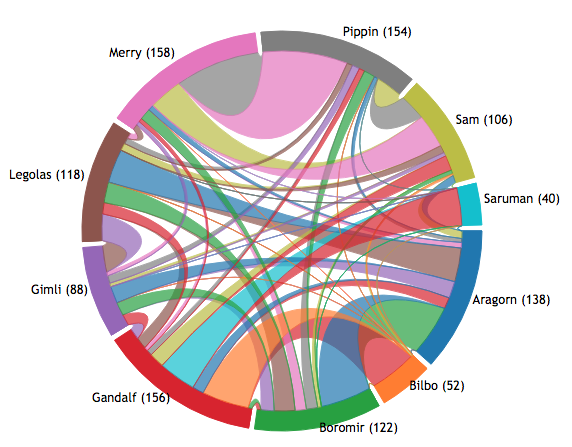

Data Analysis & Visualization of Character Hierarchy: The Fellowship of the Ring
The project below is an analysis of character hierarchy in The Lord of the Rings: The Fellowship of the Ring.
In creating this project, the first dilemma was deciding how to visualize 'hierarchy'; can it be measured through number of retweets, comments, or views? I considered platforms such as Facebook, Twitter, and WordPress as means of data scraping, but ran into privacy issues beyond my personal keys for accessing the platform's API. In observing the data between users in Facebook, one hits a wall between mutual friends or networks between people because of privacy restrictions. As for Twitter, the same could be said regarding who likes or retweets another individual. As such, I decided to work on a dataset in which I completely love: The Lord of the Rings. In creating this project, my first thought was to create arc diagrams. This would have been beneficial in understanding a connection between characters in relation to how they are related. As such, I concluded to measure the influence of characters found in the book.
The first step was to scrape the data, by which I downloaded a text file of the book, named 'FotR.txt' and utilized a Python Jupyter Notebook, with extractions found in 'Character Analysis.ipynb'. To clean the data up, I removed all annotations and then lower cased the words. From there, I utilized a dictionary of characters with the value as more dictionaries of other characters. For every paragraph of information, a character's interaction with another character's value was strengthened when their names appeared in the same paragraph together. The output of this dictionary was converted to a list of lists, and then the data was input into the script below.
{kind=link}
Character Analysis Chord Diagram
The interactive graph below showcases the number of interactions between each character with another character. The number next to the selected name equates to the number of time that character's name appears in the book, and the number next to other character's names during the hovering equates to the number of times the other character's name appears with the character being hovered.
For example, hovering over Frodo, we see that of 414 interactions, he has 126 with Sam, and then 90 with Gandalf. This is visually represented by the total area taken up by Sam, as well as the number displayed. Assuming influence has a direct relationship with interactions between characters, what if the most influential character were removed? Who would be the most influential character then? Removing Frodo from the graph, we see that Gandalf is the most influential character.
Non-Interactive Graph
